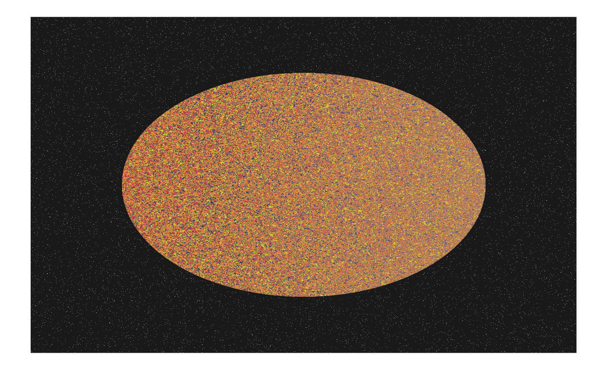
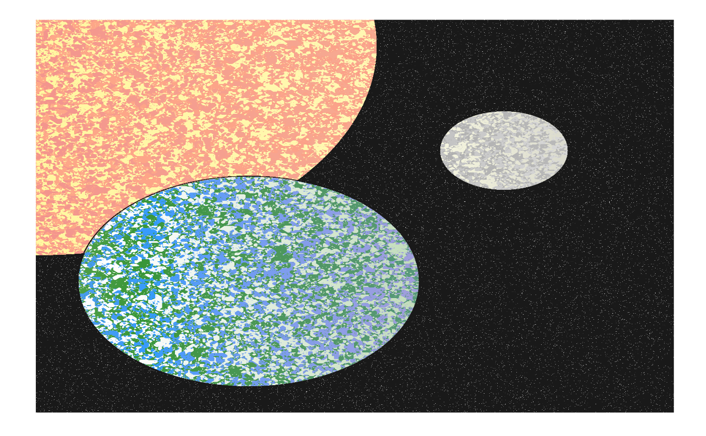

This function paints one or multiple planets and uses a cellular automata to fill their surfaces.
canvas_planet(colors, threshold = 4, iterations = 200,
starprob = 0.01, fade = 0.2,
radius = NULL, center.x = NULL, center.y = NULL,
light.right = TRUE, resolution = 1500)a character specifying the colors used for a single planet. Can also be a list where each entry is a vector of colors for a planet.
a character specifying the threshold for a color take.
a positive integer specifying the number of iterations of the algorithm.
a value specifying the probability of drawing a star in outer space.
a value specifying the amount of fading to apply.
a numeric (vector) specifying the radius of the planet(s).
the x-axis coordinate(s) for the center(s) of the planet(s).
the y-axis coordinate(s) for the center(s) of the planet(s).
whether to draw the light from the right or the left.
resolution of the artwork in pixels per row/column. Increasing the resolution increases the quality of the artwork but also increases the computation time exponentially.
A ggplot object containing the artwork.
https://fronkonstin.com/2021/01/02/neighborhoods-experimenting-with-cyclic-cellular-automata/
# \donttest{
set.seed(1)
# Simple example
canvas_planet(colors = colorPalette("retro3"))

# Advanced example
colors <- list(
c("khaki1", "lightcoral", "lightsalmon"),
c("dodgerblue", "forestgreen", "white"),
c("gray", "darkgray", "beige")
)
canvas_planet(colors,
radius = c(800, 400, 150),
center.x = c(1, 500, 1100),
center.y = c(1400, 500, 1000),
starprob = 0.005
)

# }